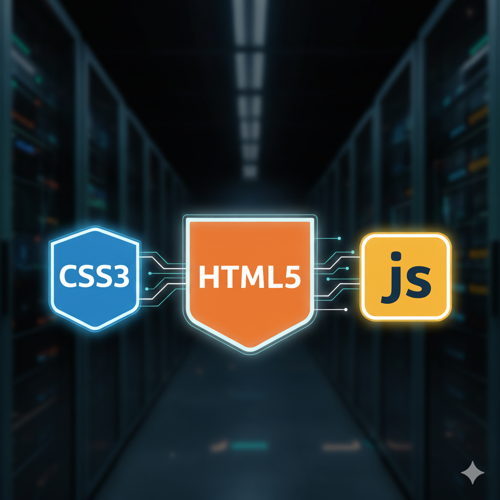
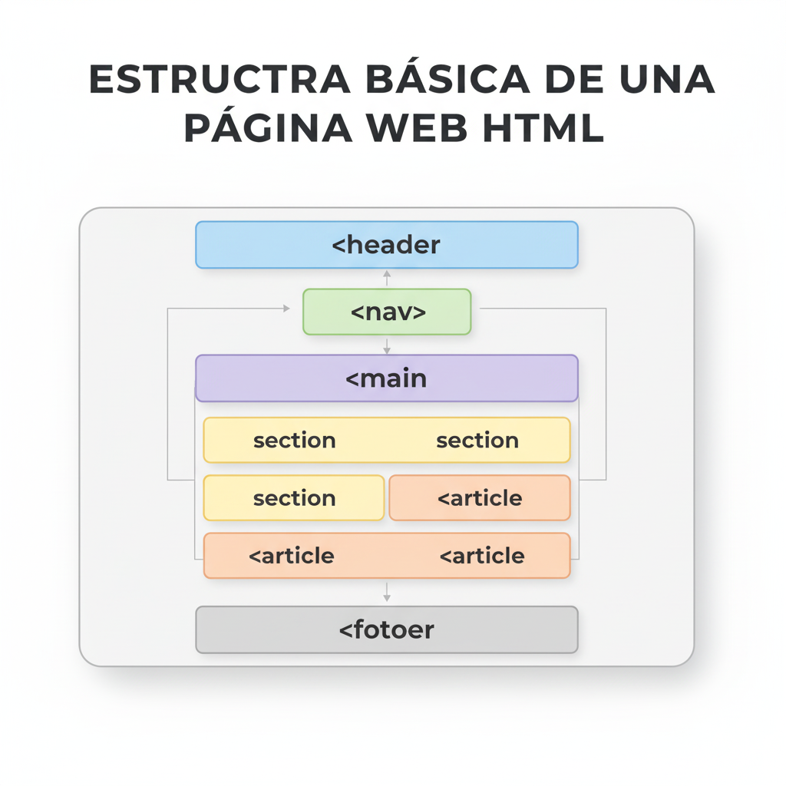
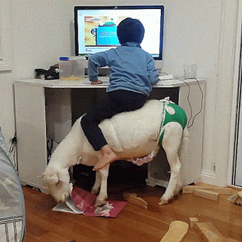

¡El Gran Salto al Desarrollo Web!
¡Bienvenidos al desarrollo web! En 1º de la ESO tuviste una pequeña introducción. Ahora, en 3º de la ESO, vamos a quitarnos el sombrero de usuarios para ponernos el de creadores. No solo verás la web, la entenderás, la estructurarás y le darás vida.
Aprenderemos a construir páginas modernas, atractivas y dinámicas usando el poder combinado de HTML y CSS, y exploraremos cómo las animaciones web hacen que la experiencia del usuario sea increíble. Además, daremos un paso al desarrollo 3D con librerías avanzadas.

- El lienzo digital te espera.
Repaso: Construyendo la Estructura Base (1º/2º ESO)
Antes de profundizar, es crucial recordar las etiquetas básicas que forman la base de cualquier página web. Debes dominar estas etiquetas para construir el esqueleto de forma correcta.
Miniproyecto Guiado: Creando un CV Básico
Copia y pega el siguiente código en un archivo nuevo (`cv-repaso.html`). Luego, modifícalo para incluir tu propia información.
<html lang="es">
<head>
<meta charset="UTF-8">
<title>Mi CV Básico</title>
</head>
<body>
<h1>[Tu Nombre Completo]</h1>
<img src="[URL_IMAGEN_TUYA]" alt="Foto de perfil" width="100">
<p>Soy estudiante de 3º de la ESO apasionado por la robótica y la tecnología.</p>
<h2>Mis Hobbies</h2>
<ul>
<li>Programar en Scratch</li>
<ol>
<li>Mi mejor juego es...</li>
</ol>
<li>Jugar al fútbol</li>
<li>Leer ciencia ficción</li>
</ul>
<h2>Contacto</h2>
<p>Puedes visitar mi perfil en <a href="[URL_DE_INTERES]">este enlace</a>.</p>
</body>
</html>
Etiquetas repasadas: <html>, <head>, <body>, <p>, <a>, <img>, <ul>, <ol>.
1. Estructura de las Páginas Web: El Esqueleto Semántico
En 1º, aprendimos que HTML es el esqueleto. En 3º, vamos a analizar ese esqueleto usando etiquetas semánticas, que son etiquetas que le dan un significado claro al contenido, no solo apariencia.
Etiquetas Semánticas Clave:
- <header>: Contiene la introducción o el grupo de navegación (ej. logo, menú).
- <nav>: Contiene los enlaces de navegación principales.
- <main>: Contiene el contenido único y principal de la página.
- <section>: Agrupa contenido relacionado (ej. una sección de "servicios").
- <article>: Contenido independiente, como una entrada de blog o una noticia.
- <footer>: Contiene información de contacto, derechos de autor o enlaces secundarios.
Usar estas etiquetas no solo organiza tu código, sino que ayuda a los motores de búsqueda (como Google) y a los lectores de pantalla para personas con discapacidad visual a entender mejor tu web.

- El mapa de tu página web.
¡Actividad Práctica! Analiza tu web favorita (Netflix, una tienda de videojuegos, el blog del colegio). Identifica qué partes corresponderían a <header>, <nav>, <main> y <footer>.
2. Servidores Web: Tipología Avanzada
Ya sabes que un servidor web almacena y entrega las páginas. En 3º, vamos a ver los diferentes tipos de servidores y cómo se usan en la industria:
Tipologías de Servidores:
- Servidores Dedicados: Un ordenador físico entero es usado por un solo cliente. Ofrece el máximo rendimiento, seguridad y control. (Imagina un gimnasio que es solo para ti).
- Servidores Compartidos: Muchos sitios web pequeños comparten el mismo servidor físico y sus recursos. Es la opción más barata y común para webs sencillas. (Imagina un autobús compartido).
- Servidores en la Nube (Cloud Hosting): El sitio web se aloja en una red de servidores virtuales. Esto permite escalar el sitio web (crecer o reducirse) de forma muy fácil y solo pagas por lo que usas. Es la tecnología más moderna. (Imagina un taxi que se adapta a cuántas personas sois).
Entender la tipología es clave para saber dónde almacenar un sitio web, dependiendo de su tamaño y tráfico esperado.
- El "almacén" de los datos web.
¡Actividad Práctica! Si fueras a crear una web para un gran evento (ej. un festival de música), ¿qué tipo de servidor elegirías (Dedicado, Compartido, o Nube)? Justifica tu respuesta.
3. Formatos y Tipos de Animación Web
La animación da vida a la web. Para que un elemento se mueva, podemos usar diferentes formatos y técnicas:
Formatos basados en Imágenes:
- GIF: El formato más antiguo. Ideal para animaciones cortas y de pocos colores. Su inconveniente es que el tamaño del archivo suele ser grande.
- APNG (Animated PNG): Una versión moderna y de alta calidad del GIF, que soporta más colores y transparencia.
- Vídeo (MP4, WebM): El más eficiente para animaciones largas o complejas.
Formatos basados en Código (los más usados hoy):
- Animaciones y Transiciones CSS: Permiten mover, rotar o cambiar elementos usando el lenguaje de estilos. Es muy eficiente y ligero.
- SVG (Scalable Vector Graphics): Animación basada en vectores. Se ve perfecto en cualquier tamaño de pantalla. Ideal para logos y gráficos.
- Animación JavaScript (JS): Permite animaciones complejas y basadas en la lógica del programa (ej. efectos en juegos o transiciones complejas entre vistas).

- El tipo de animación afecta la velocidad de carga.
¡Actividad Práctica! Insertando un GIF Animado
Tu misión: Descargar un GIF animado e insertarlo en una página web básica para demostrar la animación por imagen.
- Ve a Giphy.com y busca un GIF que te guste (ej. de un robot).
- Descarga o copia la URL del GIF (asegúrate de que termina en `.gif`).
- Crea un archivo HTML simple y usa la etiqueta
<img>para insertarlo:
4. Three.js: Dando el Salto a la Animación 3D en la Web
Para llevar la interactividad y la animación al siguiente nivel, usamos librerías de JavaScript especializadas. Three.js es la más popular para crear gráficos en 3D directamente en el navegador. ¡Es lo que se usa para crear juegos y visualizaciones profesionales!
Conceptos clave en Three.js:
- Escena (Scene): El contenedor donde viven todos los objetos.
- Cámara (Camera): Define lo que el usuario ve de la escena.
- Renderizador (Renderer): Dibuja la escena para que la veamos en el <canvas> de HTML.
- Malla (Mesh): La combinación de una geometría (forma, ej. cubo) y un material (color, textura).
Miniproyecto Guiado: Creando un Cubo 3D
¡Añade un <canvas> con un ID único al inicio de tu <body>! Luego, copia el siguiente código JavaScript (o crea un archivo .js y enlázalo) para crear y animar tu primer cubo.
// 1. Configuración básica de Three.js
const scene = new THREE.Scene();
const camera = new THREE.PerspectiveCamera(75, 400 / 300, 0.1, 1000); // Ajusta 400/300 a tu canvas
const renderer = new THREE.WebGLRenderer();
renderer.setSize(400, 300); // Tamaño del canvas en píxeles
document.getElementById('threejs-container').appendChild(renderer.domElement);
// 2. Creación del cubo (Geometría y Material)
const geometry = new THREE.BoxGeometry(1, 1, 1); // Cubo de 1x1x1
const material = new THREE.MeshBasicMaterial({ color: 0x00ff00 }); // Color verde
const cube = new THREE.Mesh(geometry, material);
scene.add(cube);
camera.position.z = 5; // Mover la cámara hacia atrás para ver el cubo
// 3. Función de animación (Loop)
function animate() {
requestAnimationFrame(animate);
// Rotar el cubo en los ejes X e Y
cube.rotation.x += 0.01;
cube.rotation.y += 0.01;
renderer.render(scene, camera);
}
animate();
</script>
¡Reto Avanzado! Intenta cambiar la geometría del cubo a una esfera (`THREE.SphereGeometry`) o modificar la velocidad de rotación.
5. Otras Herramientas de Diseño y Desarrollo Web
Además de Three.js, existen muchas otras herramientas esenciales que un desarrollador web de 3º de la ESO debe conocer para crear webs modernas:
Herramientas Clave para Diseño y CSS:
- Figma / Sketch: Se utilizan para diseñar la interfaz visual y la experiencia de usuario (UX/UI) antes de escribir cualquier código.
- Tailwind CSS: El framework de CSS que estamos usando. Permite diseñar rápidamente interfaces responsive y atractivas sin escribir CSS tradicional.
- Lottie: Herramienta que permite integrar animaciones vectoriales complejas (creadas en software como After Effects) de forma muy ligera en la web, usando JavaScript.
Actividades Evaluables: Consolidando el Desarrollo Web
Estas actividades sencillas te ayudarán a aplicar y demostrar los conocimientos fundamentales de la unidad, preparándote para el proyecto final.
Actividad 1: Analizando un Sistema de Alojamiento
Elige una página web de alto tráfico (ej. la web de un equipo de fútbol famoso o una tienda online de videojuegos). Investiga y responde en un documento de texto a las siguientes preguntas:
- ¿Qué tipología de servidor crees que utilizaría esta web (Dedicado, Compartido, Nube)? ¿Por qué?
- Identifica al menos 3 riesgos potenciales de seguridad que podrían surgir si el servidor no está bien protegido.
Criterios trabajados:
- 5.1 Conocer la construcción de aplicaciones informáticas y web, entendiendo su funcionamiento interno, de forma segura, responsable y respetuosa.
Actividad 2: Desafío de Diseño Semántico y Solución
Crea un archivo HTML llamado `desafio-semantico.html`. Tu misión es crear la estructura de una página de un blog sobre robótica:
- Define la estructura usando las etiquetas semánticas
<header>,<nav>,<main>y<footer>. - Dentro de
<main>, usa dos etiquetas<article>para simular dos entradas de blog diferentes. - Añade una animación CSS a la etiqueta
<header>(ej. un cambio de color suave al cargar la página) para demostrar la interactividad.
Explica brevemente cómo esta estructura soluciona el problema de la organización y accesibilidad del contenido.
Criterios trabajados:
- 5.2. Conocer y resolver la variedad de problemas potencialmente presentes en el desarrollo de una aplicación web, tratando de generalizar posibles soluciones.
Proyecto Final: "Mi Portafolio Web 3D"
Crearás una página web multipágina que sirva como tu portafolio digital. El requisito principal es que demuestres el uso de estructuras semánticas, diseño CSS avanzado y animación 3D.
Requisitos del Proyecto:
- 1. Estructura y Estilos:
- Usa al menos las etiquetas semánticas: <header>, <nav>, <main>, <section>, <footer>.
- Aplica estilos responsive con CSS/Tailwind para que se vea bien en móvil y escritorio.
- 2. Animación 3D (OBLIGATORIO):
- La página principal debe incluir un elemento visual creado y animado con Three.js (ej. un cubo, una esfera, un texto 3D).
- Implementa al menos 2 animaciones CSS y 2 transiciones CSS adicionales.
- 3. Seguridad, Responsabilidad y Generalización:
- El contenido debe ser seguro, respetuoso y no contener información personal sensible. Debes citar la fuente de las imágenes/recursos.
- Explica cómo el uso de etiquetas semánticas y CSS/JS generaliza la solución para otros proyectos.
Criterios trabajados:
- 5.1 Conocer la construcción de aplicaciones informáticas y web, entendiendo su funcionamiento interno, de forma segura, responsable y respetuosa.
- 5.2. Conocer y resolver la variedad de problemas potencialmente presentes en el desarrollo de una aplicación web, tratando de generalizar posibles soluciones.
Cuestionario: ¡Demuestra lo que sabes de Desarrollo Web!
Responde a las siguientes preguntas para comprobar lo que has aprendido en esta unidad.